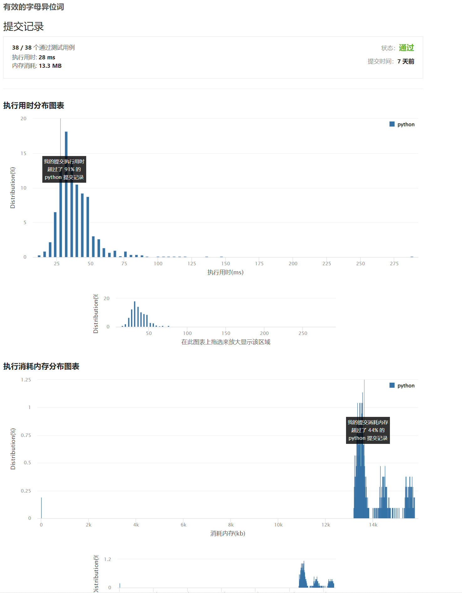

242. 有效的字母异位词
题意：利用字典将值出现的次数记录, 然后检查字典是否相同即可判断
时间复杂度: O(n)
空间复杂度: O(n)
# 给定两个字符串 s 和 t ，编写一个函数来判断 t 是否是 s 的字母异位词。
#
# 注意：若 s 和 t 中每个字符出现的次数都相同，则称 s 和 t 互为字母异位词。
#
#
#
# 示例 1:
#
#
# 输入: s = "anagram", t = "nagaram"
# 输出: true
#
#
# 示例 2:
#
#
# 输入: s = "rat", t = "car"
# 输出: false
#
#
#
# 提示:
#
#
# 1 <= s.length, t.length <= 5 * 10⁴
# s 和 t 仅包含小写字母
#
#
#
#
# 进阶: 如果输入字符串包含 unicode 字符怎么办？你能否调整你的解法来应对这种情况？
#
# Related Topics 哈希表 字符串 排序 👍 725 👎 0
class Solution(object):
def isAnagram(self, s, t):
"""
:type s: str
:type t: str
:rtype: bool
"""
s_res = {}
t_res = {}
for i in s:
s_res[i] = s_res.get(i, 0) + 1
for j in t:
t_res[j] = t_res.get(j, 0) + 1
return s_res == t_res
print(Solution().isAnagram("anagram", "anagram"))
